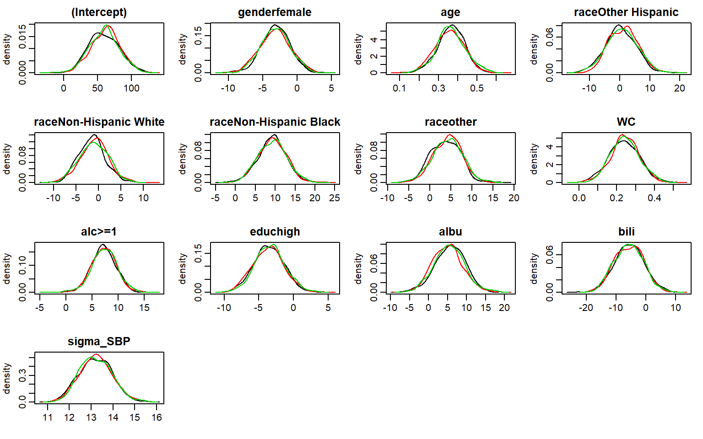

Minimal Example
2019-08-29
MinimalExample.RmdThis vignette gives a first and very brief overview of how the package JointAI can be used. The different settings and options are explained in more depth in the help pages and other vignettes.
Here, we use the NHANES data that are part of the JointAI package. For more info on this data, check the help file for the NHANES data, go to the web page of the National Health and Nutrition Examination Survey (NHANES) and check out the vignette Visualizing Incomplete Data, in which the NHANES data is explored.
Fitting a linear regression model
Fitting a linear regression model with JointAI is straightforward with the function lm_imp():
lm1 <- lm_imp(SBP ~ gender + age + race + WC + alc + educ + albu + bili,
data = NHANES, n.iter = 500, progress.bar = 'none')The specification of lm_imp() is similar to the specification of a linear regression model for complete data using lm(). In this minimal example the only difference is that for lm_imp() the number of iterations n.iter has to be specified. Of course there are many more parameters that can or should be specified. In the vignette Model Specification many of these parameters are explained in detail.
n.iter specifies the length of the Markov Chain, i.e., the number of draws from the posterior distribution of the parameter or unobserved value. How many iterations are necessary depends on the data and complexity of the model and can vary from as few as 100 up to thousands or millions.
One important criterion is that the Markov chains need to have converged. This can be evaluated visually with a traceplot.
Traceplot
traceplot(lm1)
The function traceplot() produces a plot of the sampled values across iterations per parameter. By default, three1 Markov chains are produced for each parameter and represented by different colors.
When the sampler has converged the chains show a horizontal band, as in the above figure. Consequently, when traces show a trend, convergence has not been reached and more iterations are necessary (e.g., using the function add_samples()).
When convergence has been achieved, we can obtain the result of the model from the model summary.
Model Summary
Results from a model fitted with JointAI can be printed using summary():
summary(lm1)
#>
#> Linear model fitted with JointAI
#>
#> Call:
#> lm_imp(formula = SBP ~ gender + age + race + WC + alc + educ +
#> albu + bili, data = NHANES, n.iter = 500, progress.bar = "none")
#>
#> Posterior summary:
#> Mean SD 2.5% 97.5% tail-prob. GR-crit
#> (Intercept) 60.537 22.0305 17.9279 102.928 0.00667 1.00
#> genderfemale -3.114 2.2643 -7.4199 1.328 0.17333 1.01
#> age 0.361 0.0729 0.2133 0.501 0.00000 1.01
#> raceOther Hispanic 0.446 4.7826 -8.4485 9.919 0.96533 1.02
#> raceNon-Hispanic White -1.370 3.0119 -7.2519 4.752 0.62400 1.00
#> raceNon-Hispanic Black 8.894 3.4878 1.8762 15.870 0.00667 1.01
#> raceother 3.833 3.5088 -3.0497 10.724 0.29200 1.00
#> WC 0.238 0.0804 0.0789 0.399 0.00400 1.00
#> alc>=1 7.160 2.3205 2.4314 11.528 0.00267 1.00
#> educhigh -3.436 2.1020 -7.6187 0.542 0.09200 1.00
#> albu 5.403 3.9834 -2.1165 13.098 0.18000 1.00
#> bili -5.564 4.9415 -15.2370 4.449 0.25867 1.01
#>
#> Posterior summary of residual std. deviation:
#> Mean SD 2.5% 97.5% GR-crit
#> sigma_SBP 13.2 0.718 11.8 14.7 1
#>
#>
#> MCMC settings:
#> Iterations = 101:600
#> Sample size per chain = 500
#> Thinning interval = 1
#> Number of chains = 3
#>
#> Number of observations: 186The output gives the posterior summary, i.e., the summary of the MCMC (Markov Chain Monte Carlo) sample (which consists of all chains combined).
By default, summary() will only print the posterior summary for the main model parameters of the analysis model. How to select which parameters are shown is described in the vignette Selecting Parameters.
The summary consists of the posterior mean, the standard deviation and the 2.5% and 97.5% quantiles of the MCMC sample, the tail probability and the Gelman-Rubin criterion for convergence.
The tail probability is a measure of how likely the value 0 is under the estimated posterior distribution, and is calculated as \[2\times\min\left\{Pr(\theta > 0), Pr(\theta < 0)\right\}\] (where \(\theta\) is the parameter of interest).
In the following graphics, the shaded areas represent the minimum of \(Pr(\theta > 0)\) and \(Pr(\theta < 0)\): 
The Gelman-Rubin2 criterion, also available via the function GR_crit(), compares the within and between chain variation. When it is close enough to 13, the chains can be assumed to have converged.
In the model summary, additionally, some important characteristics of the MCMC samples on which the summary is based, are given. This includes the range and number of iterations (= Sample size per chain), thinning interval and number of chains.
Furthermore, the number of observations (the sample size of the data) is given.
With the arguments start, end and thin it is possible to select which iterations from the MCMC sample are included in the summary.
For example:
When the traceplot shows that the chains only converged after 1500 iterations, start = 1500 should be specified in summary().
Plot of the posterior distributions
The posterior distributions can be visualized using the function densplot():
densplot(lm1)
By default, densplot() plots the empirical distribution of each of the chains separately. When joined = TRUE the distributions of the combined chains are plotted.
Other types of models
Besides linear regression models, it is also possible to fit
-
generalized linear models:
glm_imp()(follows the specification ofglm()) -
cumulative logit models for ordinal outcomes:
clm_imp()(follows the specification ofclm()from package ordinal) -
linear mixed models:
lme_imp()(follows the specification oflme()from package nlme) -
generalized linear mixed models:
glme_imp()(analogue the specification used inlme_imp()andglm_imp()) -
cumulative logit mixed models for longitudinal ordinal outcomes:
clmm_imp()(follows the specification ofclmm2()from package ordinal) -
parametric (Weibull) survival models:
survreg_imp()(follows the specification ofsurvreg()from package survival) -
Cox proportional hazards survival models:
coxph_imp()(follows the specification ofcoxph()from package survival)
The number of chains can be changed with the argument
n.chain.↩︎Gelman, A and Rubin, DB (1992) Inference from iterative simulation using multiple sequences, Statistical Science, 7, 457-511.
Brooks, SP. and Gelman, A. (1998) General methods for monitoring convergence of iterative simulations. Journal of Computational and Graphical Statistics, 7, 434-455.↩︎for example < 1.1; but this is not a generally accepted cut-off↩︎